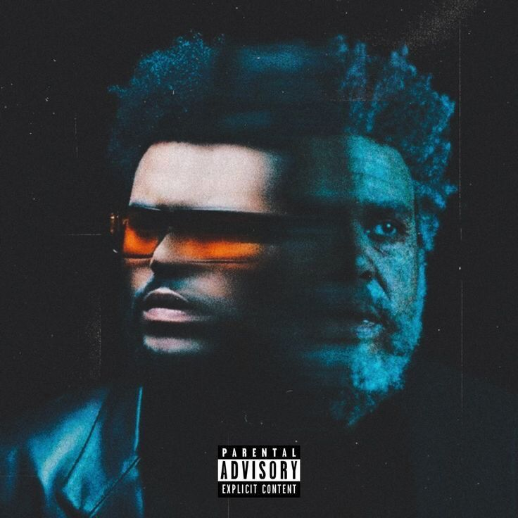
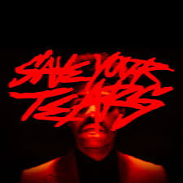
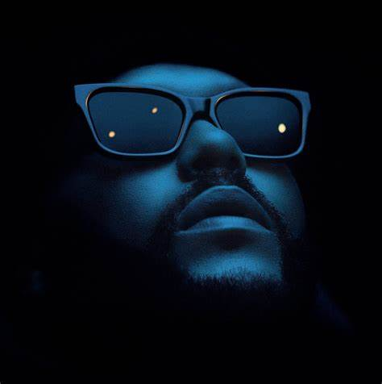

- Creepin': Trata sobre la infidelidad y la lucha interna de sentirse atraído por alguien a pesar de estar en una relación. 
- Out of Time:Explora la nostalgia y el arrepentimiento en una relación fallida, donde el protagonista se siente desconectado y perdido. 
- Save Your Tears: Aborda el tema del dolor emocional y la dificultad de mostrar vulnerabilidad, mientras se enfrenta a las consecuencias de una ruptura. 
- Moth to a Flame: Habla sobre la atracción irresistible hacia alguien que puede ser destructivo, reflejando una relación apasionada pero tóxica.